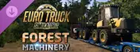
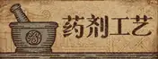

STEAM STORE DATA
价格与活动以商店页面为准
| # | 游戏 / GAME | 当前价格 | 折扣 | 已记录最低 | 玩家测评 | 购买区域限制 | 当前在线 | 商店链接 |
|---|---|---|---|---|---|---|---|---|
| 01 | TT Isle Of Man: Ride on the Edge 3APP / 1924170 | ¥9.90 |
-95% | ¥9.90↘ 已记录史低 | 多半好评此游戏的 921 篇用户评测中有 73% 为好评 | 国区可购区域说明商店未披露跨区激活或赠送限制，购买前请确认商品页。 |
—峰值 — | 商店 |
| 02 | ¥6.84 |
-91% | ¥6.84↘ 已记录史低 | 特别好评此游戏的 8556 篇用户评测中有 84% 为好评 | 国区可购区域说明商店未披露跨区激活或赠送限制，购买前请确认商品页。 |
—峰值 — | 商店 | |
| 03 | ¥7.60 |
-90% | ¥7.60↘ 已记录史低 | 特别好评此游戏的 25612 篇用户评测中有 93% 为好评 | 国区可购区域说明商店未披露跨区激活或赠送限制，购买前请确认商品页。 |
—峰值 — | 商店 | |
| 04 | Sniper Elite 4APP / 312660 | ¥15.80 |
-90% | ¥ 15.80↘ 已记录史低 | 特别好评此游戏的 16499 篇用户评测中有 90% 为好评 | 国区可购区域说明商店未披露跨区激活或赠送限制，购买前请确认商品页。 |
—峰值 — | 商店 |
| 05 | ¥10.80 |
-90% | ¥10.80↘ 已记录史低 | 特别好评此游戏的 31386 篇用户评测中有 89% 为好评 | 国区可购区域说明商店未披露跨区激活或赠送限制，购买前请确认商品页。 |
—峰值 — | 商店 | |
| 06 | ¥19.90 |
-90% | ¥ 19.90↘ 已记录史低 | 多半好评此游戏的 38694 篇用户评测中有 78% 为好评 | 国区可购区域说明商店未披露跨区激活或赠送限制，购买前请确认商品页。 |
—峰值 — | 商店 | |
| 07 | ¥7.00 |
-90% | ¥7.00↘ 已记录史低 | 特别好评此游戏的 9560 篇用户评测中有 82% 为好评 | 国区可购区域说明商店未披露跨区激活或赠送限制，购买前请确认商品页。 |
—峰值 — | 商店 | |
| 08 | WRC 8 FIA World Rally ChampionshipAPP / 1004750 | ¥9.00 |
-90% | ¥9.00↘ 已记录史低 | 多半好评此游戏的 562 篇用户评测中有 70% 为好评 | 国区可购区域说明商店未披露跨区激活或赠送限制，购买前请确认商品页。 |
—峰值 — | 商店 |
| 09 | 狙击精英5APP / 1029690 | ¥13.80 |
-90% | ¥13.80↘ 已记录史低 | 多半好评此游戏的 3745 篇用户评测中有 72% 为好评 | 国区可购区域说明商店未披露跨区激活或赠送限制，购买前请确认商品页。 |
—峰值 — | 商店 |
| 10 | ¥10.12 |
-89% | ¥10.12↘ 已记录史低 | 特别好评此游戏的 1268 篇用户评测中有 91% 为好评 | 国区可购区域说明商店未披露跨区激活或赠送限制，购买前请确认商品页。 |
—峰值 — | 商店 | |
| 11 | Sniper Elite 3APP / 238090 | ¥14.04 |
-87% | ¥ 13.20 | 多半好评此游戏的 1953 篇用户评测中有 78% 为好评 | 国区可购区域说明商店未披露跨区激活或赠送限制，购买前请确认商品页。 |
—峰值 — | 商店 |
| 12 | ¥25.20 |
-85% | ¥25.20↘ 已记录史低 | 多半好评此游戏的 449 篇用户评测中有 79% 为好评 | 国区可购区域说明商店未披露跨区激活或赠送限制，购买前请确认商品页。 |
—峰值 — | 商店 | |
| 13 | ¥14.44 |
-81% | ¥14.44↘ 已记录史低 | 特别好评此游戏的 1062 篇用户评测中有 87% 为好评 | 国区可购区域说明商店未披露跨区激活或赠送限制，购买前请确认商品页。 |
—峰值 — | 商店 | |
| 14 | ¥21.60 |
-80% | ¥21.60↘ 已记录史低 | 多半好评此游戏的 1468 篇用户评测中有 71% 为好评 | 国区可购区域说明商店未披露跨区激活或赠送限制，购买前请确认商品页。 |
—峰值 — | 商店 | |
| 15 | Far Cry® 4APP / 298110 | ¥29.60 |
-80% | ¥ 29.60↘ 已记录史低 | 多半好评此游戏的 7114 篇用户评测中有 79% 为好评 | 国区可购区域说明商店未披露跨区激活或赠送限制，购买前请确认商品页。 |
—峰值 — | 商店 |
| 16 | ¥33.60 |
-80% | ¥33.60↘ 已记录史低 | 多半好评此游戏的 2730 篇用户评测中有 77% 为好评 | 国区可购区域说明商店未披露跨区激活或赠送限制，购买前请确认商品页。 |
—峰值 — | 商店 | |
| 17 | 幽灵行动：荒野APP / 460930 | ¥41.60 |
-80% | ¥41.60↘ 已记录史低 | 多半好评此游戏的 22335 篇用户评测中有 72% 为好评 | 国区可购 · 有限制区域说明Purchases made in this region will only receive the Russian, simplified Chinese and English (Audio only) languages. |
—峰值 — | 商店 |
| 18 | 新枪弹辩驳V3 大家自相残杀的新学期APP / 567640 | ¥40.00 |
-80% | ¥40.00↘ 已记录史低 | 多半好评此游戏的 7432 篇用户评测中有 71% 为好评 | 国区可购区域说明商店未披露跨区激活或赠送限制，购买前请确认商品页。 |
—峰值 — | 商店 |
| 19 | Transport Fever 2APP / 1066780 | ¥27.20 |
-80% | ¥27.20↘ 已记录史低 | 特别好评此游戏的 3812 篇用户评测中有 89% 为好评 | 国区可购区域说明商店未披露跨区激活或赠送限制，购买前请确认商品页。 |
—峰值 — | 商店 |
| 20 | ¥29.99 |
-80% | ¥29.99↘ 已记录史低 | 多半好评此游戏的 1477 篇用户评测中有 74% 为好评 | 国区可购区域说明商店未披露跨区激活或赠送限制，购买前请确认商品页。 |
—峰值 — | 商店 | |
| 21 | ¥49.60 |
-80% | ¥49.60↘ 已记录史低 | 多半好评此游戏的 1273 篇用户评测中有 71% 为好评 | 国区可购区域说明商店未披露跨区激活或赠送限制，购买前请确认商品页。 |
—峰值 — | 商店 | |
| 22 | The WitnessAPP / 210970 | ¥28.00 |
-75% | ¥ 22.40 | 特别好评此游戏的 3659 篇用户评测中有 89% 为好评 | 国区可购区域说明商店未披露跨区激活或赠送限制，购买前请确认商品页。 |
—峰值 — | 商店 |
| 23 | Euro Truck Simulator 2APP / 227300 | ¥23.24 |
-75% | ¥23.24↘ 已记录史低 | 好评如潮此游戏的 52902 篇用户评测中有 96% 为好评 | 国区可购区域说明商店未披露跨区激活或赠送限制，购买前请确认商品页。 |
89,967峰值 90,948 | 商店 |
| 24 | American Truck SimulatorAPP / 270880 | ¥23.24 |
-75% | ¥23.24↘ 已记录史低 | 特别好评此游戏的 5373 篇用户评测中有 94% 为好评 | 国区可购区域说明商店未披露跨区激活或赠送限制，购买前请确认商品页。 |
—峰值 — | 商店 |
| 25 | ¥27.50 |
-75% | ¥17.50 | 特别好评此游戏的 250 篇用户评测中有 80% 为好评 | 国区可购区域说明商店未披露跨区激活或赠送限制，购买前请确认商品页。 |
—峰值 — | 商店 | |
| 26 | Graveyard KeeperAPP / 599140 | ¥19.00 |
-75% | ¥ 15.20 | 多半好评此游戏的 3000 篇用户评测中有 72% 为好评 | 国区可购区域说明商店未披露跨区激活或赠送限制，购买前请确认商品页。 |
—峰值 — | 商店 |
| 27 | ¥38.50 |
-75% | ¥38.50↘ 已记录史低 | 特别好评此游戏的 776 篇用户评测中有 85% 为好评 | 国区可购区域说明商店未披露跨区激活或赠送限制，购买前请确认商品页。 |
—峰值 — | 商店 | |
| 28 | ¥30.24 |
-72% | ¥ 24.30 | 多半好评此游戏的 2142 篇用户评测中有 76% 为好评 | 国区可购区域说明商店未披露跨区激活或赠送限制，购买前请确认商品页。 |
—峰值 — | 商店 | |
| 29 | STEINS;GATEAPP / 412830 | ¥27.00 |
-70% | ¥27.00↘ 已记录史低 | 好评如潮此游戏的 15129 篇用户评测中有 97% 为好评 | 国区可购区域说明商店未披露跨区激活或赠送限制，购买前请确认商品页。 |
—峰值 — | 商店 |
| 30 | 玛莉的炼金工房 Remake ～萨尔布鲁克的炼金术士～APP / 2138090 | ¥89.70 |
-70% | ¥89.70↘ 已记录史低 | 特别好评此游戏的 325 篇用户评测中有 89% 为好评 | 国区可购区域说明商店未披露跨区激活或赠送限制，购买前请确认商品页。 |
—峰值 — | 商店 |
| 31 | ¥33.32 |
-66% | ¥ 24.50 | 特别好评此游戏的 28522 篇用户评测中有 86% 为好评 | 国区可购区域说明商店未披露跨区激活或赠送限制，购买前请确认商品页。 |
—峰值 — | 商店 | |
| 32 | ¥24.50 |
-65% | ¥24.50↘ 已记录史低 | 好评如潮此游戏的 1514 篇用户评测中有 95% 为好评 | 国区可购区域说明商店未披露跨区激活或赠送限制，购买前请确认商品页。 |
—峰值 — | 商店 | |
| 33 | SimRail - The Railway SimulatorAPP / 1422130 | ¥70.15 |
-65% | ¥70.15↘ 已记录史低 | 特别好评此游戏的 5415 篇用户评测中有 85% 为好评 | 国区可购区域说明商店未披露跨区激活或赠送限制，购买前请确认商品页。 |
—峰值 — | 商店 |
| 34 |  Euro Truck Simulator 2 - Forest MachineryAPP / 4159240 |
¥16.19 |
-65% | ¥16.19↘ 已记录史低 | 特别好评此游戏的 144 篇用户评测中有 87% 为好评 | 国区可购区域说明商店未披露跨区激活或赠送限制，购买前请确认商品页。 |
—峰值 — | 商店 |
| 35 | ¥46.56 |
-61% | ¥46.56↘ 已记录史低 | 特别好评此游戏的 3897 篇用户评测中有 91% 为好评 | 国区可购区域说明商店未披露跨区激活或赠送限制，购买前请确认商品页。 |
—峰值 — | 商店 | |
| 36 | 光明记忆：无限APP / 1178830 | ¥19.20 |
-60% | ¥19.20↘ 已记录史低 | 特别好评此游戏的 26596 篇用户评测中有 93% 为好评 | 国区可购区域说明商店未披露跨区激活或赠送限制，购买前请确认商品页。 |
—峰值 — | 商店 |
| 37 |  药剂工艺：炼金模拟器APP / 1210320 |
¥30.40 |
-60% | ¥30.40↘ 已记录史低 | 特别好评此游戏的 6311 篇用户评测中有 89% 为好评 | 国区可购区域说明商店未披露跨区激活或赠送限制，购买前请确认商品页。 |
—峰值 — | 商店 |
| 38 | 要战便战APP / 1272320 | ¥39.60 |
-60% | ¥39.60↘ 已记录史低 | 特别好评此游戏的 1875 篇用户评测中有 81% 为好评 | 国区可购区域说明商店未披露跨区激活或赠送限制，购买前请确认商品页。 |
—峰值 — | 商店 |
| 39 | ¥30.40 |
-60% | ¥30.40↘ 已记录史低 | 特别好评此游戏的 1881 篇用户评测中有 88% 为好评 | 国区可购区域说明商店未披露跨区激活或赠送限制，购买前请确认商品页。 |
—峰值 — | 商店 | |
| 40 | ENDER LILIES: Quietus of the KnightsAPP / 1369630 | ¥39.20 |
-60% | ¥39.20↘ 已记录史低 | 特别好评此游戏的 16222 篇用户评测中有 91% 为好评 | 国区可购区域说明商店未披露跨区激活或赠送限制，购买前请确认商品页。 |
—峰值 — | 商店 |
| 41 | ¥79.20 |
-60% | ¥79.20↘ 已记录史低 | 多半好评此游戏的 1546 篇用户评测中有 74% 为好评 | 国区可购区域说明商店未披露跨区激活或赠送限制，购买前请确认商品页。 |
—峰值 — | 商店 | |
| 42 | 将熄之焰 The Last FlameAPP / 1830970 | ¥22.00 |
-60% | ¥22.00↘ 已记录史低 | 多半好评此游戏的 742 篇用户评测中有 73% 为好评 | 国区可购区域说明商店未披露跨区激活或赠送限制，购买前请确认商品页。 |
—峰值 — | 商店 |
| 43 | ¥35.80 |
-60% | ¥35.80↘ 已记录史低 | 特别好评此游戏的 613 篇用户评测中有 81% 为好评 | 国区可购区域说明商店未披露跨区激活或赠送限制，购买前请确认商品页。 |
—峰值 — | 商店 | |
| 44 | ¥49.05 |
-55% | ¥49.05↘ 已记录史低 | 特别好评此游戏的 2540 篇用户评测中有 86% 为好评 | 国区可购区域说明商店未披露跨区激活或赠送限制，购买前请确认商品页。 |
—峰值 — | 商店 | |
| 45 | ¥125.55 |
-55% | ¥125.55↘ 已记录史低 | 多半好评此游戏的 3961 篇用户评测中有 70% 为好评 | 国区可购区域说明商店未披露跨区激活或赠送限制，购买前请确认商品页。 |
—峰值 — | 商店 | |
| 46 | Euro Truck Simulator 2 - KRONE Agriculture EquipmentAPP / 3872920 | ¥20.82 |
-55% | ¥20.82↘ 已记录史低 | 特别好评此游戏的 76 篇用户评测中有 97% 为好评 | 国区可购区域说明商店未披露跨区激活或赠送限制，购买前请确认商品页。 |
—峰值 — | 商店 |
| 47 | Euro Truck Simulator 2 - Bobcat Cargo PackAPP / 4348650 | ¥20.82 |
-55% | ¥20.82↘ 已记录史低 | 特别好评此游戏的 70 篇用户评测中有 94% 为好评 | 国区可购区域说明商店未披露跨区激活或赠送限制，购买前请确认商品页。 |
—峰值 — | 商店 |
| 48 | Euro Truck Simulator 2 - Going East!APP / 227310 | ¥23.64 |
-50% | ¥ 15.90 | 特别好评此游戏的 3108 篇用户评测中有 88% 为好评 | 国区可购区域说明商店未披露跨区激活或赠送限制，购买前请确认商品页。 |
—峰值 — | 商店 |
| 49 | Euro Truck Simulator 2 - ScandinaviaAPP / 304212 | ¥40.99 |
-50% | ¥ 29.40 | 特别好评此游戏的 223 篇用户评测中有 95% 为好评 | 国区可购区域说明商店未披露跨区激活或赠送限制，购买前请确认商品页。 |
—峰值 — | 商店 |
| 50 | Euro Truck Simulator 2 - High Power Cargo PackAPP / 304214 | ¥11.57 |
-50% | ¥ 9.90 | 特别好评此游戏的 1774 篇用户评测中有 90% 为好评 | 国区可购区域说明商店未披露跨区激活或赠送限制，购买前请确认商品页。 |
—峰值 — | 商店 |
| 51 | Euro Truck Simulator 2 - Vive la France !APP / 531130 | ¥40.99 |
-50% | ¥ 29.40 | 特别好评此游戏的 1935 篇用户评测中有 91% 为好评 | 国区可购区域说明商店未披露跨区激活或赠送限制，购买前请确认商品页。 |
—峰值 — | 商店 |
| 52 | Euro Truck Simulator 2 - Heavy Cargo PackAPP / 531131 | ¥11.57 |
-50% | ¥ 6.30 | 特别好评此游戏的 2432 篇用户评测中有 88% 为好评 | 国区可购区域说明商店未披露跨区激活或赠送限制，购买前请确认商品页。 |
—峰值 — | 商店 |
| 53 | Euro Truck Simulator 2 - ItaliaAPP / 558244 | ¥40.99 |
-50% | ¥ 29.40 | 特别好评此游戏的 1962 篇用户评测中有 93% 为好评 | 国区可购区域说明商店未披露跨区激活或赠送限制，购买前请确认商品页。 |
—峰值 — | 商店 |
| 54 | Euro Truck Simulator 2 - Special TransportAPP / 558245 | ¥11.57 |
-50% | ¥ 9.90 | 多半好评此游戏的 255 篇用户评测中有 74% 为好评 | 国区可购区域说明商店未披露跨区激活或赠送限制，购买前请确认商品页。 |
—峰值 — | 商店 |
| 55 | American Truck Simulator - OregonAPP / 800370 | ¥30.49 |
-50% | ¥ 15.90 | 特别好评此游戏的 904 篇用户评测中有 93% 为好评 | 国区可购区域说明商店未披露跨区激活或赠送限制，购买前请确认商品页。 |
—峰值 — | 商店 |
| 56 | Euro Truck Simulator 2 - Beyond the Baltic SeaAPP / 925580 | ¥40.99 |
-50% | ¥ 18.00 | 特别好评此游戏的 2627 篇用户评测中有 90% 为好评 | 国区可购区域说明商店未披露跨区激活或赠送限制，购买前请确认商品页。 |
—峰值 — | 商店 |
| 57 | American Truck Simulator - WashingtonAPP / 1015160 | ¥30.49 |
-50% | ¥ 15.90 | 特别好评此游戏的 720 篇用户评测中有 93% 为好评 | 国区可购区域说明商店未披露跨区激活或赠送限制，购买前请确认商品页。 |
—峰值 — | 商店 |
| 58 | Euro Truck Simulator 2 - Road to the Black SeaAPP / 1056760 | ¥40.99 |
-50% | ¥ 29.40 | 特别好评此游戏的 3344 篇用户评测中有 86% 为好评 | 国区可购区域说明商店未披露跨区激活或赠送限制，购买前请确认商品页。 |
—峰值 — | 商店 |
| 59 | Euro Truck Simulator 2 - IberiaAPP / 1209460 | ¥40.99 |
-50% | ¥40.99↘ 已记录史低 | 多半好评此游戏的 2296 篇用户评测中有 76% 为好评 | 国区可购区域说明商店未披露跨区激活或赠送限制，购买前请确认商品页。 |
—峰值 — | 商店 |
| 60 | American Truck Simulator - IdahoAPP / 1209470 | ¥30.49 |
-50% | ¥30.49↘ 已记录史低 | 特别好评此游戏的 601 篇用户评测中有 90% 为好评 | 国区可购区域说明商店未披露跨区激活或赠送限制，购买前请确认商品页。 |
—峰值 — | 商店 |
| 61 | American Truck Simulator - TexasAPP / 1465750 | ¥40.99 |
-50% | ¥40.99↘ 已记录史低 | 特别好评此游戏的 720 篇用户评测中有 87% 为好评 | 国区可购区域说明商店未披露跨区激活或赠送限制，购买前请确认商品页。 |
—峰值 — | 商店 |
| 62 | ¥89.50 |
-50% | ¥44.00 | 特别好评此游戏的 3237 篇用户评测中有 89% 为好评 | 国区可购区域说明商店未披露跨区激活或赠送限制，购买前请确认商品页。 |
—峰值 — | 商店 | |
| 63 | Walk of LifeAPP / 1910150 | ¥39.50 |
-50% | ¥39.50↘ 已记录史低 | 特别好评此游戏的 970 篇用户评测中有 94% 为好评 | 国区可购区域说明商店未披露跨区激活或赠送限制，购买前请确认商品页。 |
—峰值 — | 商店 |
| 64 | ¥11.00 |
-50% | ¥11.00↘ 已记录史低 | 特别好评此游戏的 40807 篇用户评测中有 94% 为好评 | 国区可购区域说明商店未披露跨区激活或赠送限制，购买前请确认商品页。 |
—峰值 — | 商店 | |
| 65 | Euro Truck Simulator 2 - West BalkansAPP / 2004210 | ¥40.99 |
-50% | ¥40.99↘ 已记录史低 | 特别好评此游戏的 1788 篇用户评测中有 85% 为好评 | 国区可购区域说明商店未披露跨区激活或赠送限制，购买前请确认商品页。 |
—峰值 — | 商店 |
| 66 | BALL x PIT — 球比伦战记APP / 2062430 | ¥29.00 |
-50% | ¥29.00↘ 已记录史低 | 特别好评此游戏的 2532 篇用户评测中有 89% 为好评 | 国区可购区域说明商店未披露跨区激活或赠送限制，购买前请确认商品页。 |
—峰值 — | 商店 |
| 67 | American Truck Simulator - OklahomaAPP / 2209650 | ¥30.49 |
-50% | ¥30.49↘ 已记录史低 | 多半好评此游戏的 429 篇用户评测中有 78% 为好评 | 国区可购区域说明商店未披露跨区激活或赠送限制，购买前请确认商品页。 |
—峰值 — | 商店 |
| 68 | Thronefall《王权陨落》APP / 2239150 | ¥26.00 |
-50% | ¥26.00↘ 已记录史低 | 好评如潮此游戏的 6499 篇用户评测中有 96% 为好评 | 国区可购区域说明商店未披露跨区激活或赠送限制，购买前请确认商品页。 |
—峰值 — | 商店 |
| 69 | American Truck Simulator - KansasAPP / 2298430 | ¥30.49 |
-50% | ¥30.49↘ 已记录史低 | 特别好评此游戏的 308 篇用户评测中有 88% 为好评 | 国区可购区域说明商店未披露跨区激活或赠送限制，购买前请确认商品页。 |
—峰值 — | 商店 |
| 70 | American Truck Simulator - NebraskaAPP / 2543810 | ¥30.49 |
-50% | ¥30.49↘ 已记录史低 | 特别好评此游戏的 292 篇用户评测中有 84% 为好评 | 国区可购区域说明商店未披露跨区激活或赠送限制，购买前请确认商品页。 |
—峰值 — | 商店 |
| 71 | American Truck Simulator - ArkansasAPP / 2585150 | ¥30.49 |
-50% | ¥30.49↘ 已记录史低 | 特别好评此游戏的 305 篇用户评测中有 81% 为好评 | 国区可购区域说明商店未披露跨区激活或赠送限制，购买前请确认商品页。 |
—峰值 — | 商店 |
| 72 | Dead by Daylight - Chucky ChapterAPP / 2656010 | ¥11.70 |
-50% | ¥11.70↘ 已记录史低 | 特别好评此游戏的 1114 篇用户评测中有 80% 为好评 | 国区可购区域说明商店未披露跨区激活或赠送限制，购买前请确认商品页。 |
—峰值 — | 商店 |
| 73 | 九王 9 KingsAPP / 2784470 | ¥29.50 |
-50% | ¥29.50↘ 已记录史低 | 多半好评此游戏的 1632 篇用户评测中有 77% 为好评 | 国区可购区域说明商店未披露跨区激活或赠送限制，购买前请确认商品页。 |
—峰值 — | 商店 |
| 74 | 超侦探事件簿 雾雨谜宫 PlusAPP / 2903950 | ¥44.00 |
-50% | ¥44.00↘ 已记录史低 | 多半好评此游戏的 625 篇用户评测中有 72% 为好评 | 国区可购区域说明商店未披露跨区激活或赠送限制，购买前请确认商品页。 |
—峰值 — | 商店 |
| 75 | 阿西, 美女室友竟然...？APP / 3021100 | ¥38.00 |
-50% | ¥38.00↘ 已记录史低 | 特别好评此游戏的 1116 篇用户评测中有 84% 为好评 | 国区可购区域说明商店未披露跨区激活或赠送限制，购买前请确认商品页。 |
—峰值 — | 商店 |
| 76 | iRacing ArcadeAPP / 3226450 | ¥46.00 |
-50% | ¥46.00↘ 已记录史低 | 多半好评此游戏的 1257 篇用户评测中有 72% 为好评 | 国区可购区域说明商店未披露跨区激活或赠送限制，购买前请确认商品页。 |
—峰值 — | 商店 |
| 77 | ¥13.00 |
-50% | ¥13.00↘ 已记录史低 | 特别好评此游戏的 325 篇用户评测中有 83% 为好评 | 国区可购区域说明商店未披露跨区激活或赠送限制，购买前请确认商品页。 |
—峰值 — | 商店 | |
| 78 | ¥294.84 |
-46% | ¥294.84↘ 已记录史低 | 多半好评此游戏的 4170 篇用户评测中有 74% 为好评 | 国区可购区域说明商店未披露跨区激活或赠送限制，购买前请确认商品页。 |
—峰值 — | 商店 | |
| 79 | ENDER MAGNOLIA: Bloom in the MistAPP / 2725260 | ¥53.90 |
-45% | ¥53.90↘ 已记录史低 | 特别好评此游戏的 6584 篇用户评测中有 92% 为好评 | 国区可购区域说明商店未披露跨区激活或赠送限制，购买前请确认商品页。 |
—峰值 — | 商店 |
| 80 | OneShotAPP / 420530 | ¥25.20 |
-40% | ¥ 14.40 | 好评如潮此游戏的 5855 篇用户评测中有 98% 为好评 | 国区可购区域说明商店未披露跨区激活或赠送限制，购买前请确认商品页。 |
—峰值 — | 商店 |
| 81 | We Who Are About To DieAPP / 973230 | ¥48.00 |
-40% | ¥48.00↘ 已记录史低 | 特别好评此游戏的 8160 篇用户评测中有 88% 为好评 | 国区可购区域说明商店未披露跨区激活或赠送限制，购买前请确认商品页。 |
—峰值 — | 商店 |
| 82 | ¥28.80 |
-40% | ¥28.80↘ 已记录史低 | 特别好评此游戏的 2702 篇用户评测中有 81% 为好评 | 国区可购区域说明商店未披露跨区激活或赠送限制，购买前请确认商品页。 |
—峰值 — | 商店 | |
| 83 | ¥52.80 |
-40% | ¥52.80↘ 已记录史低 | 多半好评此游戏的 958 篇用户评测中有 75% 为好评 | 国区可购区域说明商店未披露跨区激活或赠送限制，购买前请确认商品页。 |
—峰值 — | 商店 | |
| 84 | 异形工厂2APP / 2162800 | ¥66.00 |
-40% | ¥66.00↘ 已记录史低 | 好评如潮此游戏的 1450 篇用户评测中有 95% 为好评 | 国区可购区域说明商店未披露跨区激活或赠送限制，购买前请确认商品页。 |
—峰值 — | 商店 |
| 85 | ¥69.00 |
-40% | ¥69.00↘ 已记录史低 | 特别好评此游戏的 2966 篇用户评测中有 90% 为好评 | 国区可购区域说明商店未披露跨区激活或赠送限制，购买前请确认商品页。 |
—峰值 — | 商店 | |
| 86 | Supermarket SimulatorAPP / 2670630 | ¥47.40 |
-40% | ¥47.40↘ 已记录史低 | 多半好评此游戏的 3131 篇用户评测中有 77% 为好评 | 国区可购区域说明商店未披露跨区激活或赠送限制，购买前请确认商品页。 |
—峰值 — | 商店 |
| 87 | ¥20.46 |
-38% | ¥20.46↘ 已记录史低 | 特别好评此游戏的 18166 篇用户评测中有 83% 为好评 | 国区可购区域说明商店未披露跨区激活或赠送限制，购买前请确认商品页。 |
13,895峰值 19,334 | 商店 | |
| 88 | 晃晃人生 / Wobbly LifeAPP / 1211020 | ¥42.90 |
-35% | ¥ 36.90 | 特别好评此游戏的 825 篇用户评测中有 92% 为好评 | 国区可购区域说明商店未披露跨区激活或赠送限制，购买前请确认商品页。 |
—峰值 — | 商店 |
| 89 | ¥23.40 |
-35% | ¥23.40↘ 已记录史低 | 特别好评此游戏的 4845 篇用户评测中有 90% 为好评 | 国区可购区域说明商店未披露跨区激活或赠送限制，购买前请确认商品页。 |
—峰值 — | 商店 | |
| 90 | ¥16.56 |
-35% | ¥16.56↘ 已记录史低 | 多半好评此游戏的 1464 篇用户评测中有 77% 为好评 | 国区可购区域说明商店未披露跨区激活或赠送限制，购买前请确认商品页。 |
—峰值 — | 商店 | |
| 91 | 我带过的最差一届APP / 5175310 | ¥18.20 |
-35% | ¥18.20↘ 已记录史低 | 特别好评此游戏的 276 篇用户评测中有 85% 为好评 | 国区可购区域说明商店未披露跨区激活或赠送限制，购买前请确认商品页。 |
—峰值 — | 商店 |
| 92 | 不问凡尘APP / 4209920 | ¥19.89 |
-33% | ¥19.89↘ 已记录史低 | 特别好评此游戏的 1924 篇用户评测中有 87% 为好评 | 国区可购区域说明商店未披露跨区激活或赠送限制，购买前请确认商品页。 |
—峰值 — | 商店 |
| 93 | ANIMAL WELLAPP / 813230 | ¥59.50 |
-30% | ¥59.50↘ 已记录史低 | 好评如潮此游戏的 7045 篇用户评测中有 96% 为好评 | 国区可购区域说明商店未披露跨区激活或赠送限制，购买前请确认商品页。 |
—峰值 — | 商店 |
| 94 | Crosshair XAPP / 1366800 | ¥29.40 |
-30% | ¥ 9.00 | 特别好评此软件的 1550 篇用户评测中有 80% 为好评 | 国区可购区域说明商店未披露跨区激活或赠送限制，购买前请确认商品页。 |
45,598峰值 47,022 | 商店 |
| 95 | 神之天平（ASTLIBRA Revision）APP / 1718570 | ¥56.00 |
-30% | ¥56.00↘ 已记录史低 | 特别好评此游戏的 23914 篇用户评测中有 94% 为好评 | 国区可购区域说明商店未披露跨区激活或赠送限制，购买前请确认商品页。 |
—峰值 — | 商店 |
| 96 | 编程农场APP / 2060160 | ¥29.40 |
-30% | ¥29.40↘ 已记录史低 | 特别好评此游戏的 1315 篇用户评测中有 93% 为好评 | 国区可购区域说明商店未披露跨区激活或赠送限制，购买前请确认商品页。 |
—峰值 — | 商店 |
| 97 | 真・三国无双 起源APP / 2384580 | ¥244.30 |
-30% | ¥244.30↘ 已记录史低 | 特别好评此游戏的 10307 篇用户评测中有 92% 为好评 | 国区可购区域说明商店未披露跨区激活或赠送限制，购买前请确认商品页。 |
—峰值 — | 商店 |
| 98 | Euro Truck Simulator 2 - GreeceAPP / 2604420 | ¥42.69 |
-30% | ¥42.69↘ 已记录史低 | 特别好评此游戏的 1318 篇用户评测中有 89% 为好评 | 国区可购区域说明商店未披露跨区激活或赠送限制，购买前请确认商品页。 |
—峰值 — | 商店 |
| 99 | PICO PARK 2APP / 2644470 | ¥28.00 |
-30% | ¥28.00↘ 已记录史低 | 特别好评此游戏的 1416 篇用户评测中有 82% 为好评 | 国区可购区域说明商店未披露跨区激活或赠送限制，购买前请确认商品页。 |
—峰值 — | 商店 |
| 100 | American Truck Simulator - MissouriAPP / 2730870 | ¥42.69 |
-30% | ¥42.69↘ 已记录史低 | 特别好评此游戏的 272 篇用户评测中有 80% 为好评 | 国区可购区域说明商店未披露跨区激活或赠送限制，购买前请确认商品页。 |
—峰值 — | 商店 |
没有找到匹配的游戏，试试其他关键词或折扣。